Um lugar seguro depois da escola.
Há mais de 35 anos, a ACRIC acolhe crianças e adolescentes de 6 a 15 anos no contraturno escolar, em Castelo-ES. Almoço, lanche e oficinas, de segunda a sexta.
Chegada 11h30
Saída 16h00
Idade 6 a 15 anos
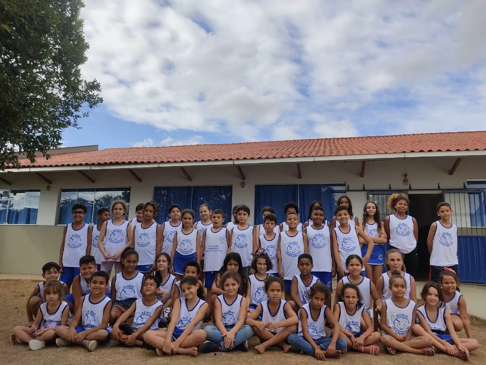
Há mais de 35 anos no contraturno de Castelo
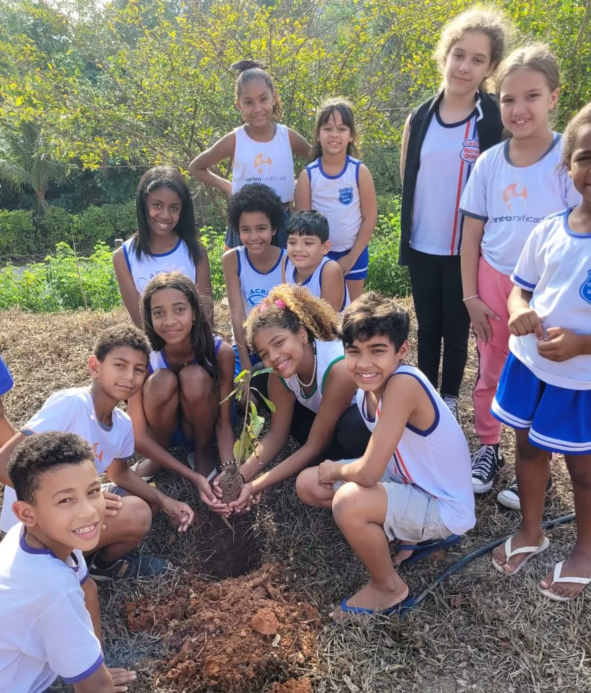
- Sede própria
- Cava Roxa, Castelo-ES
- Atendimento
- Seg. a sex., 11h30 às 16h00
- Idade
- 6 a 15 anos
- Serviço
- SCFV · Resolução CNAS 109/2009
- Reconhecimento
- Duas vezes Criança Esperança
“Acolher e assistir crianças e adolescentes em situação de vulnerabilidade e risco social, contribuindo para o desenvolvimento social, cultural, cognitivo e pessoal, oferecendo novas oportunidades a fim de despertar habilidades, sonhos e afastá-los dos riscos sociais.”
A Associação das Crianças de Castelo (ACRIC) é uma Organização da Sociedade Civil sem fins lucrativos, com sede própria no bairro Cava Roxa.
Atendemos mais de 100 crianças e adolescentes de 6 a 15 anos, de segunda a sexta, no contraturno escolar, das 11h30 às 16h00. Oferecemos o Serviço de Convivência e Fortalecimento de Vínculos (SCFV), como preconiza a Tipificação Nacional dos Serviços Socioassistenciais (Resolução CNAS nº 109, de 11 de novembro de 2009).
Todos os dias servimos almoço e lanche da tarde, garantindo a segurança alimentar e nutricional das crianças. E, enquanto elas estão num lugar seguro e aprendendo, as famílias podem seguir no trabalho.
Por esse trabalho, a ACRIC já foi contemplada duas vezes pelo Criança Esperança. Venha conhecer a nossa entidade e o serviço que oferecemos às crianças e aos adolescentes do município.
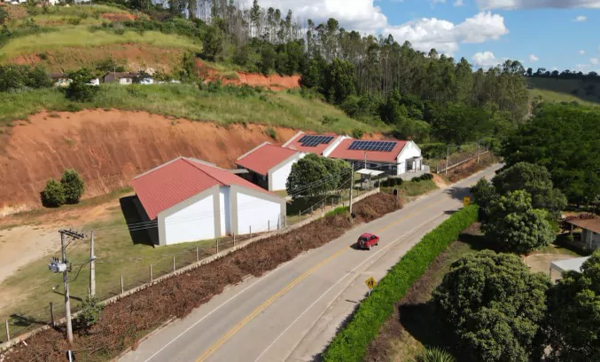
O que acontece no contraturno
Almoço e lanche todos os dias, e oficinas para aprender, criar, se mexer e brincar.
-
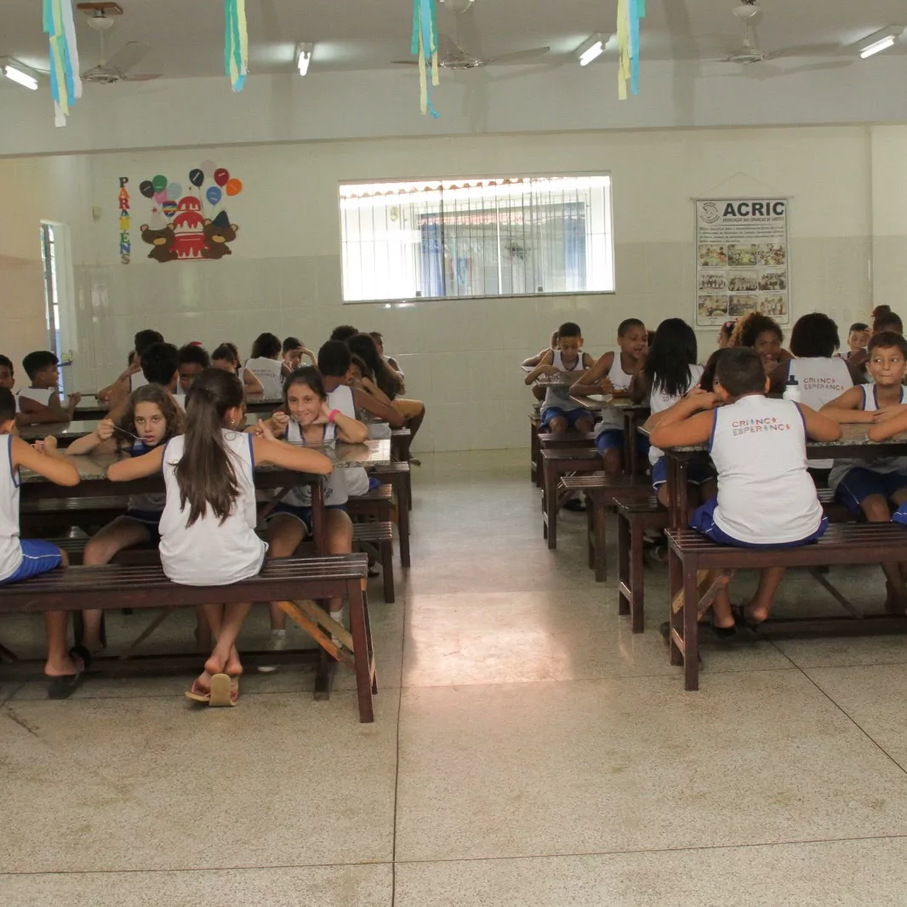
Almoço e lanche da tarde
ACRIC · todos os dias
No refeitório, garantindo a segurança alimentar e nutricional de quem está crescendo.
-
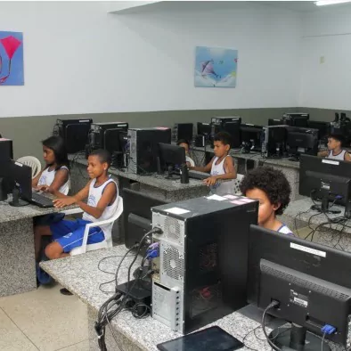
Informática
ACRIC
Cada criança no seu computador.
-
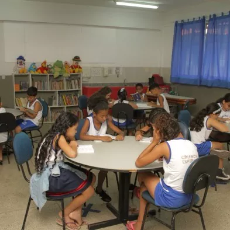
Cultura e Ludicidade
ACRIC
Leitura e escrita em mesas redondas, perto da estante.
-
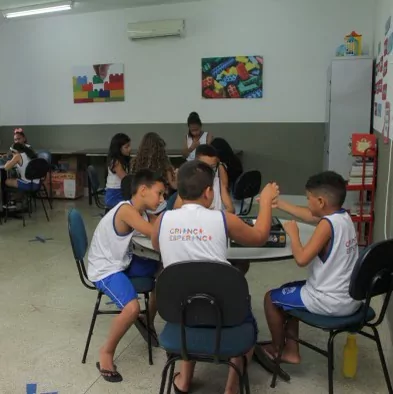
Jogos Pedagógicos
ACRIC
Jogos de mesa em grupo.
-
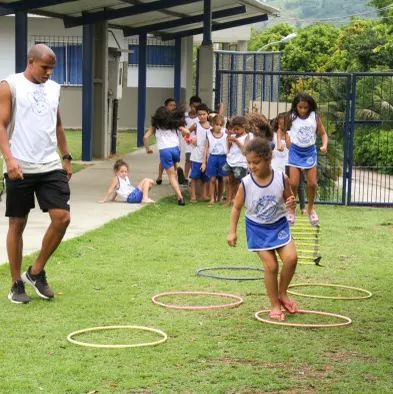
Esporte
ACRIC
Circuito de bambolês no gramado.
-
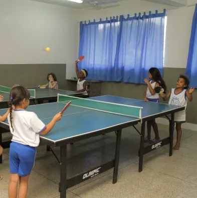
Recreação
ACRIC
Pingue-pongue e brincadeira livre.
-
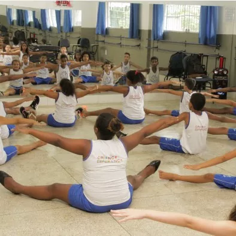
Dança
ACRIC
Alongamento e movimento no salão.
-
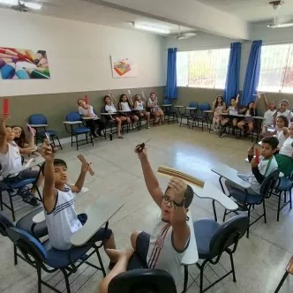
Artes
ACRIC
Criação com as mãos, em roda.
-
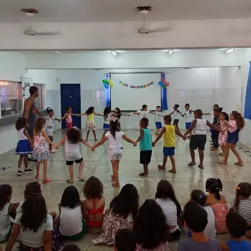
Teatro
ACRIC
Roda de mãos dadas e plateia atenta.
-
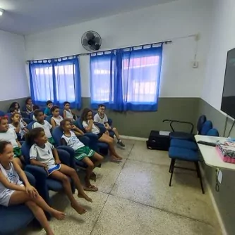
Sala de Vídeo
ACRIC
A turma sentada em fila para a sessão.
-
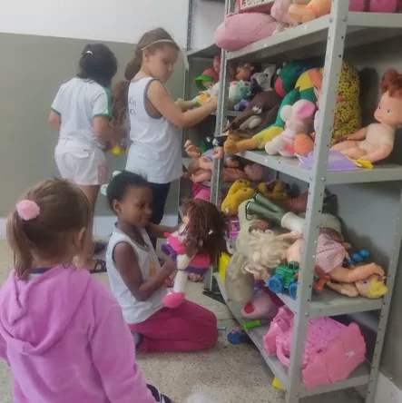
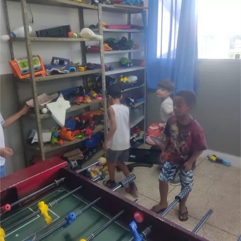
Brinquedoteca
ACRIC
Bonecas, bichos de pelúcia, carrinhos e pebolim.
Em parceria com a Rochativa
Musicalização, capoeira, jiu-jitsu e ballet chegam às crianças da ACRIC em parceria com a Rochativa.
-
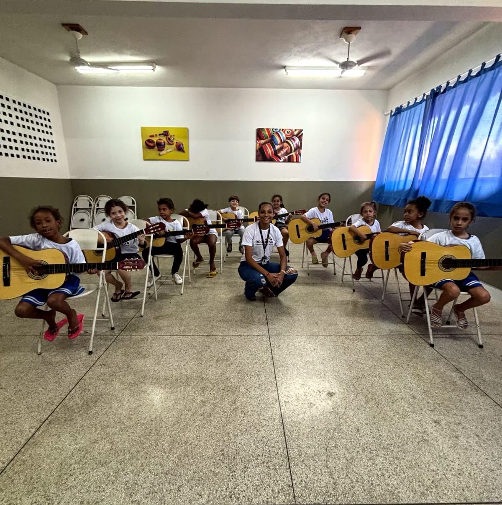
Musicalização
Rochativa
Violões em roda.
-
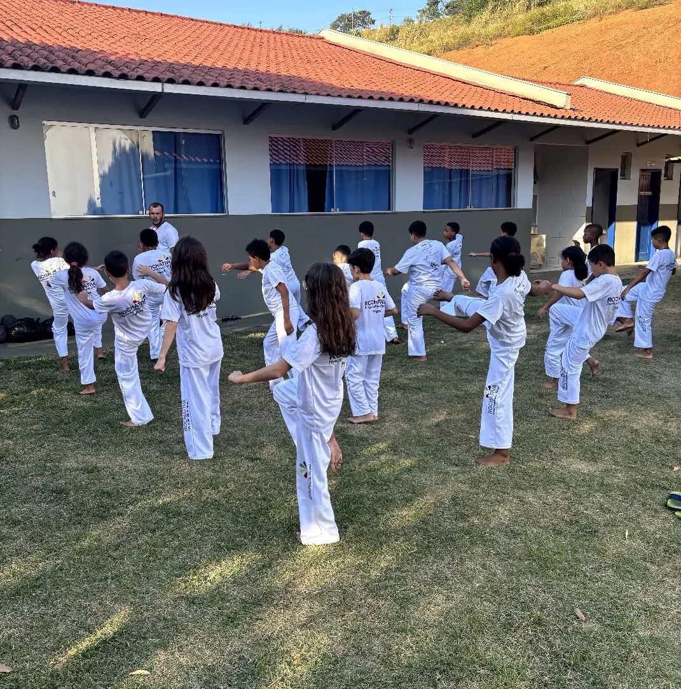
Capoeira
Rochativa
De abadá branco, no pátio.
-
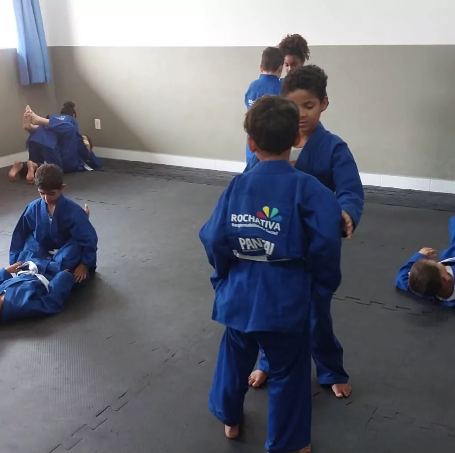
Jiu-jitsu
Rochativa
De kimono azul, no tatame.
-
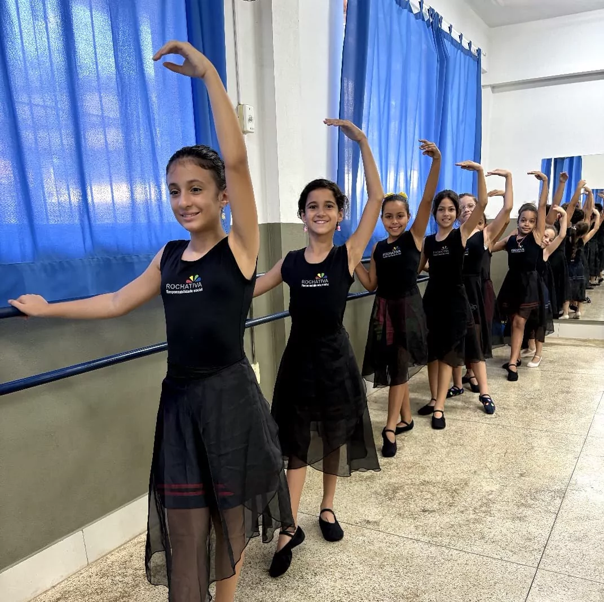
Ballet
Rochativa
Na barra, de collant e saia de tule.
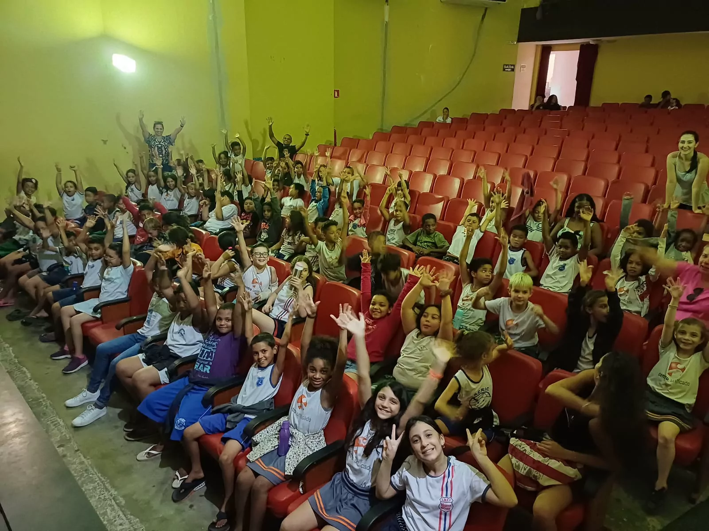
Enquanto as famílias trabalham, as crianças estão num lugar seguro, aprendendo.
Como doar
“A solidariedade é o amor em movimento.”
Sua contribuição ajuda a manter o almoço, o lanche e as oficinas de mais de 100 crianças e adolescentes de Castelo. Escolha o jeito mais fácil para você.
PIX
Chave CNPJ
31.726.755/0001-00
Na hora de pagar, confira se o recebedor é a Associação das Crianças de Castelo.
Débito automático mensal
Faça um débito automático mensal em uma das nossas contas:
| Banco | Agência | Conta |
|---|---|---|
| Caixa | 0591 | Op. 003 · C/C 423-4 |
| Bradesco | 1710 | C/C 4084-3 |
| Sicoob | 3003 | C/C 88043-4 |
| Banestes | 0116 | C/C 2.324.416 |
| Sicredi | 0307 | C/C 78110-3 |
Nota Premiada Capixaba
Quer concorrer a prêmios de até R$ 100.000,00 e ainda ajudar a ACRIC? Cadastre-se no Nota Premiada Capixaba e indique a Associação das Crianças de Castelo – ACRIC como entidade beneficiada.
Cadastrar no Nota Premiada (abre em nova aba)Nossas crianças agradecem.
Diretoria 2025–2028
Quem responde pela ACRIC neste mandato, com o acompanhamento do Conselho Fiscal.
CNPJ 31.726.755/0001-00
Diretoria
- Presidente Inês Vettorazzi Nemer
- Vice-Presidente Silvana Paganini Passaman
- Primeira Secretária Maria José Scabello da Silva
- Segunda Secretária Eliane Maria Pizol Colodete
- Primeiro Tesoureiro Giovanni Riccio
- Segundo Tesoureiro Celso Marcolan Casagrande
Conselho Fiscal
- I-Juca Pirama Rosa
- Mauro Colodete
- Cilene Fuzer Payer
- Elenir Travalia Gomes
- Maristela F. Ribeiro Soares
- José Marcos Zogato
Venha conhecer a ACRIC
-
Av. João Venturim Filho, 2165
Bairro Cava Roxa, Castelo-ES · CEP 29360-000Em frente ao asilo ILPI Vila Feliz.
Abrir no mapa (abre em nova aba) -
Horário de funcionamento:
segunda a sexta, das 12h às 17h
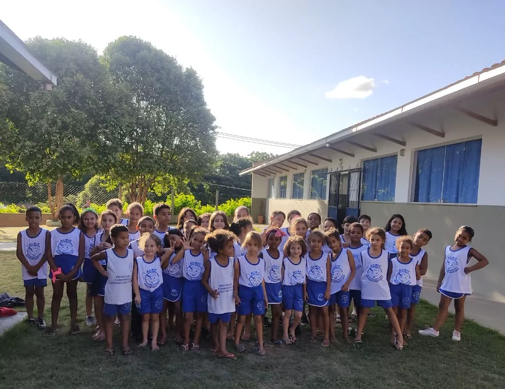
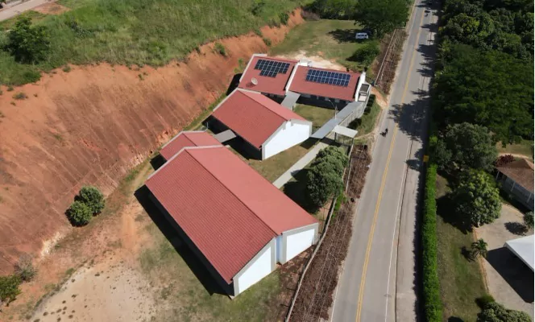